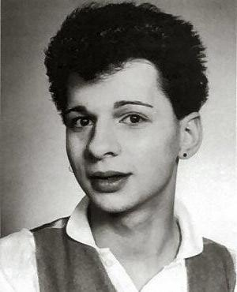

DAVE GAHAN

Nació en Epping (Essex) el 09 de mayo de 1962, pero desde niño llegó a vivir a la población de Basildon en el mismo condado. Su verdadero padre le abandonó a él y a su madre cuando apenas era un bebé. Su madre se volvió a casar y el pequeño Dave adoptó el apellido (Gahan) de su padrastro, al que siempre quiso como su verdadero padre. Su auténtico padre, de origen malayo, falleció cuando Dave apenas tenía siete años.
Su primer matrimonio fue con su novia de adolescencia, Joanne Fox, en 1985, y tuvo a su primer hijo Jack en 1987. Gahan se divorció de Joanne en 1991 para casarse de nuevo, esta vez con Theresa Conroy de la que se divorciaría en 1996. En la actualidad está casado con Jennifer Sklias, desde 1998, y tienen dos hijos en común, llamados Jim y Stella Rose.
Desde muy joven siempre fue un chico rebelde, en sus propias palabras "salvaje", y varias veces pisó las cortes para menores por conducir motos a velocidad prohibida y por rayar paredes.
Siendo un poco más grande, con unos amigos formó una agrupación juvenil llamada The Vermin identificada con el movimiento punk de los 70’s, en la cual pretendían emular a bandas como The Clash y The Sex Pistols, hasta que en 1980 se encontraba cantando, casi tarareando, Heroes de David Bowie en un salón de eventos artísticos del condado donde lo oyó Vince Clarke y pronto lo contactó ofreciéndole convertirse en la voz de su grupo, Gahan aceptó entrar a Composition of Sound en donde conoció a Martin Gore y a Andy Fletcher y lo primero que hizo fue rebautizar a la banda como Depeche Mode, nombre que tomó de estar hojeando una revista de modas de Francia así llamada. Clarke abandonó el proyecto después de concretar el primer disco, Gahan sin embargo, aun y cuando ha llevado a cabo su propio proyecto musical, ha permanecido hasta la fecha con Gore y con Fletcher en el grupo
Dave Gahan es uno de los pocos vocalistas de un grupo que durante años se ha dedicado casi exclusivamente a cantar, razón por la cual la imagen y el éxito de la banda siempre han recaído sobre él, así como los excesos. En 1986 comenzó a tener experiencias con drogas, problema que se fue agravando particularmente con las giras de 1987-88 Music for the Masses Tour (con motivo del álbum Music for the Masses), World Violation Tour de 1990 (del álbum Violator), y sobre todo con el Devotional Tour de 1993 (del álbum Songs of Faith and Devotion) que además se extendió en 1994 como Exotic Tour, todo lo cual llevó a Gahan a su punto más crítico en 1995 cuando tuvo un paro cardiaco de dos minutos.
Durante el resto de 1995 y el comienzo de 1996 cayó y recayó intermitentemente en las drogas, hasta que recibió una advertencia de las autoridades norteamericanas de impedirle la entrada a los Estados Unidos si no solucionaba su adicción, irónicamente fue por ello que comenzó a enmendarse y para 1997 logró superar por completo el problema.
El más conocido aporte de Dave Gahan a Depeche Mode es sin duda que precisamente él sugirió ese nombre, el cual tomó de estar hojeando una revista de modas de Francia así llamada. Sin embargo muchos reconocen que su carisma, dominio y presencia escénica han contribuido en mucho al éxito del grupo; además, su característica voz, grave y nasal, es todo un distintivo del grupo e incluso considerada por algunos como una influencia del movimiento de música electrónica mismo.
Fue hasta 1992 que se presentó a trabajar con sus compañeros completamente convertido en una estrella de rock, con el pelo largo y tatuajes, en buena medida a él se debió el sonido meramente rock del álbum Songs of Faith and Devotion de 1993, época en la que estaba más hundido en su problema de drogas.
Para 1997 habiendo superado su adicción incluso tomó clases de canto, y para el 2002 después de que Depeche Mode dejara atrás también la que es probablemente su época más difícil se puso a trabajar en su primer esfuerzo solista en donde, junto con su amigo el guitarrista Knox Chandler (quien participó en el álbum Exciter de DM), compuso buena parte de sus propias canciones. Su disco se llamó Paper Monsters e incluso realizó una gira para la cual incluyó dentro de su repertorio algunos de los más gustados éxitos de Depeche Mode.
Habiendo logrado lo que pocos músicos, superar un muy fuerte problema de drogas, para el último disco de Depeche Mode, Playing the Angel, Gahan animado por el éxito obtenido con su propio disco compuso tres temas, Suffer Well, I Want It All y Nothing's Impossible, los cuales fueron musicalizados por Andrew Phillpott y por Christian Eigner (quien se ha convertido en el baterista de Depeche Mode) y de los que el primero fue seleccionado incluso como sencillo promocional del álbum. Es la primera vez que Dave Gahan aporta canciones a Depeche Mode.
Gahan reveló que escribió una veintena de canciones para Depeche Mode. En la actualidad, Gahan ha publicado su segundo álbum solista titulado Hourglass, el cual concibió otra vez junto con Eigner y Phillpott, un trabajo muy cercano a su reciente aporte a Depeche Mode.
Dave Gahan ha participado en todos los discos y todas las giras de Depeche Mode.